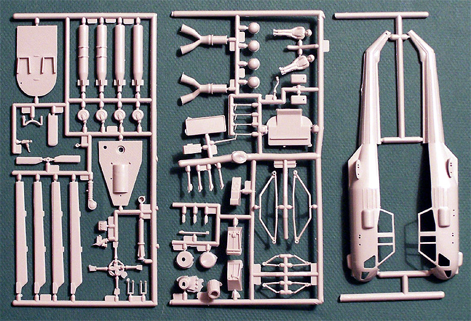

{kind=link}


Fujimi 1/48 Westland “Wasp” H.A.S. Mk.1
Kit #9059
Collector’s Market Value $8.00
Images and text Copyright © 2005 by Matt Swan
Developmental Background
In 1957 two British companies were developing a light helicopter to fill a perceived need for a general purpose helicopter for the British Army and the Royal Navy. Saunders-Roe was developing the “Scout” while Westland was developing the “Wasp”. On August 9, 1959 Westland acquired Saunders-Roe and the two programs were combined into the “Scout/Wasp” program with the “Scout” being able to seat five with a skid undercarriage and the “Wasp” seating four with a quadricycle undercarriage and folding elements (tail and main rotors) to enable shipboard stowage. The pre-production Scout flew on August 4, 1960, with the first production model being tested on March 6, 1961. The prototype Wasp became airborne on 28 October1962.
The Westland Wasp, powered by the Rolls-Royce nimbus 503 engine was developed as a light anti-submarine and anti-surface warfare helicopter carrying 2 target-seeking torpedoes for operations from small ships and was the first of a new generation of gas-turbine powered light helicopters. Wasps from the ice patrol ship HMS Endurance took part in the attacks, which crippled the Argentine submarine Santa Fe during the Falklands War. The Scout is in service with the Royal Army as a light multi-purpose helicopter and can carry air to surface missiles.
Besides serving with distinction in the British armed forces these helicopters have been sold to air forces and navies around the world such as Australia, Brazil, the Netherlands and New Zealand. Many of these are still in service today.
The Kit
The Westland Wasp is not well represented in plastic, in fact the only two kits produced of this cute little helo are from Fujimi – one in 1/48 scale and one in 1/72 scale. The 1/72 scale kit is still available in certain hobby shops but the 1/48 scale is only found on trader’s tables or Internet auctions. The kit is older technology with raised detail and vague definition to the interior pieces. I guess this is actually fairly appropriate since it is a 50s/60s era helicopter. The worst of the pieces inside have got to be the pilot figures. What is up with these old Fujimi figures? We are talking about roughly man shaped blobs of clay here so if you want to build this with a crew you’ll need to hit the spares box for realistic looking figures.

The detail on the flight crew seats and instrument panels are not very exciting either. The seats can be improved with some PE belts but I’m not sure what to do with the center consol. Exterior detail is generally good with exceptions around the engine and rotor head. The engine could use some dressing up with the addition of some magnet wire details and tubing. The point where the blades connect to the rotor is just a solid chunk. These blades are designed to fold but there is no effort made by Fujimi to replicate this look. This is an area that the modeler could do some serious improvement with some scratch work.
The main fuselage pieces do fit together well and in general you do have a good starting point to build a good looking helicopter. The light gray injection molded pieces show some light flash and distinct mold separation lines. The single sprue of clear parts covers the canopy glass in seven pieces. The main piece has crisp finely raised frame lines and all the pieces show good clarity. All these pieces are cast in clear plastic and the top section of the main canopy will need a coating of translucent green paint to replicate the tinted look of the actual aircraft. With sixty-nine gray polystyrene pieces and seven clear parts we have seventy-six pieces in the box.
Decals and Instructions
The instructions consist of a single 10 inch by 10 inch sheet of paper printed front and back. The front side has a brief historical background of the aircraft in five languages. Another paragraph, again in five languages, covers basic modeling instructions and warnings in addition to a parts map. The flip side has three exploded views for construction that appear to be fairly clear and includes plenty of color call-outs. There is a single dual view of the helicopter showing decal placement and exterior painting. We also have a color chart with what appears to be either Humbrol or Gunze paint codes in addition to color names in five languages.
We do not get a heck of a lot of options in the decal department with this kit. Included are basic decals for one Royal Navy aircraft. Other than the prominent tail rotor warning marking there are no other warning or service stencils. The decals have good color density, fair print registry, are relatively thin but brittle. They do respond well to Micro-Sol and Micro-Set solutions.
Conclusions
Cute is about the most appropriate way to describe this kit. General parts fit is good and overall detail is adequate on the exterior, minimal on the interior. The engine and rotor head could use some extra work. I think a good days work on that head could result in a nice folded blade option. Built straight out of the box it’ll make a mediocre model. It does give us a good starting point to build a nice model with the addition of some scratch built accessories. Scratch built is all you are going to get here because there is nothing on the aftermarket for this kit. It does make an interesting addition to any helicopter collection. It would be interesting to scrounge some decals to build a Brazilian or New Zealand aircraft.